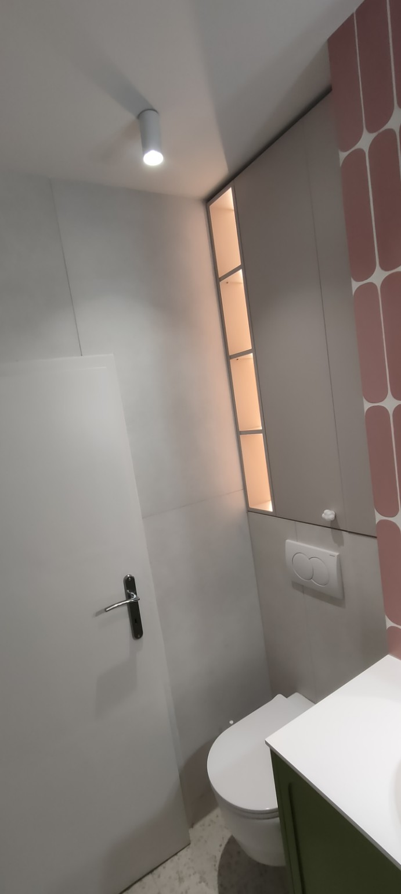

Vodovod
Ugradnja, zamena i popravka vodovodnih instalacija.
Vodovod, kanalizacija, grejanje, keramika i kompletno renoviranje kupatila. Pouzdana izrada, pažnja prema detaljima i dogovor koji se poštuje.
Od instalacija do završnih radova – sve na jednom mestu.
Ugradnja, zamena i popravka vodovodnih instalacija.
Izrada i rekonstrukcija kanalizacionih instalacija.
Ugradnja i povezivanje sistema grejanja i radijatora.
Postavljanje zidnih i podnih keramičkih pločica.
Kompletna rekonstrukcija kupatila, od instalacija do završne obrade.
Završne obrade i uređenje prostora po dogovoru.
MK MONT je firma iz Subotice, osnovana 2021. godine. Bavimo se vodovodnim i kanalizacionim instalacijama, grejanjem, keramikom i kompletnim renoviranjem kupatila.
Naš cilj je kvalitetno izveden posao i jasan dogovor sa svakim klijentom.
Jedan tim za instalacije, renoviranje i završne radove.
Renoviranje kupatila – pre i posle. Pogledajte transformaciju prostora.



Imate pitanje ili planirate radove? Javite se za dogovor i ponudu.
Subotica, Srbija
Vodovod · Kanalizacija · Grejanje · Keramika · Renoviranje
Ovde ćemo upisati tvoj tačan broj telefona i e-mail adresu, da posetioci mogu direktno da te kontaktiraju.